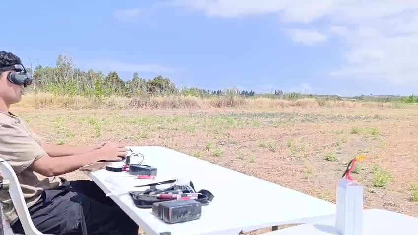
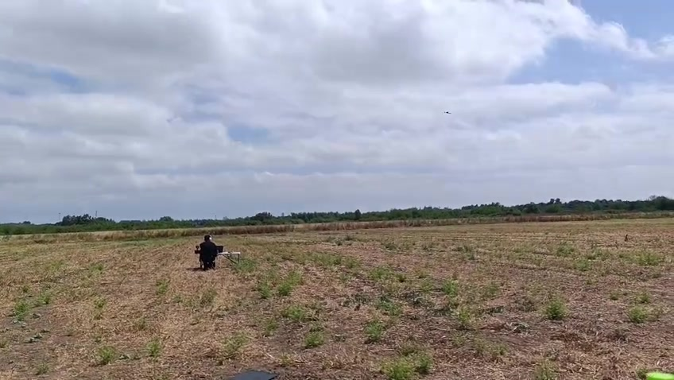

01 / PROBLEM
Low-flying UAV detection
Explore acoustic sensing as an additional local warning layer near personnel and infrastructure.
A research prototype for detecting low-flying UAVs from real-world audio using pretrained representations, anomaly-detection models, and a compact TinyML deployment branch.
The project combines field data, public audio corpora, representation learning, anomaly detection, and deployment constraints rather than treating accuracy as the only goal.
Explore acoustic sensing as an additional local warning layer near personnel and infrastructure.
Measure performance across recording sessions, devices, background sounds, and ultimately held-out drone types.
Compare pretrained audio embeddings, metric learning, one-class models, CNNs, and teacher–student methods.
Track model size, quantization, inference latency, and the cost of feature extraction—not only classifier speed.
Recent UAV attacks and reconnaissance missions on Israel’s northern front demonstrated the difficulty of detecting small, low-flying aircraft consistently. The project studies microphones as a complementary sensor, not as a replacement for radar or air defense.
An acoustic sensor does not transmit energy, can operate close to the protected area, and may continue processing without a permanent cloud connection. Its value would be highest when fused with other sensing modalities.
Each stage is separated so datasets, representations, detectors, and deployment models can be compared independently.
Assemble internal and public UAV, background, machinery, and aircraft audio.
Label events, segment recordings, normalize sample rates, and define train/validation/test splits.
Extract AST, Wav2Vec2, YAMNet, log-mel, and raw-waveform representations.
Train Isolation Forest, One-Class SVM, logistic regression, CNN, and experimental teacher–student models.
Quantize a compact mini-SE-Net and measure real edge-device cost.
Outdoor UAV audio changes with distance, flight path, wind, terrain, microphone placement, and background activity. The field sessions help expose those domain shifts.


This is real on-device browser inference using the saved 22.6 KB mini-SE-Net model. Longer recordings are analyzed as consecutive one-second windows so you can see exactly where the model reacts.
WAV, MP3, M4A, MP4, or a browser microphone recording. Up to 60 seconds are analyzed.
The model expects one-second windows. Scores from 30% to 70% are shown as uncertain. Very short trailing fragments are ignored.
Research prototype. The displayed score is the model’s quantized softmax output, not an operational threat assessment. Scores between 30% and 70% are intentionally reported as uncertain. Current published metrics use the saved random clip-level test split.
The current results identify promising representations. A stricter experiment is required before claiming robust detection of an unseen UAV.
Used to screen model combinations, but neighboring clips from the same source may appear across splits.
All clips from one complete session remain in a single split to reduce source and temporal leakage.
A complete drone type, recording session, device, and unseen negative categories are reserved for final testing.
Near-perfect AUC appears only where triplet-adapted features were available (Multiclass, MIMII). It drops to 0.724 on AeroSonicDB and collapses on Binary_Drone_Audio. That inconsistency is strong evidence the random-split scores are inflated — the case for leave-one-drone-out.
| Dataset | Target (anomaly) | Test (anom / normal) | Best model | AUC | F1* |
|---|---|---|---|---|---|
| Multiclass_Drone_Audio | drone | 100 / 1,656 | ast_triplet · IsoForest | 1.000 | 0.806 |
| MIMII slider | abnormal machine | 54 / 160 | ast_triplet · IsoForest | 1.000 | 0.947 |
| AeroSonicDB | aircraft | 94 / 191 | wav2vec · IsoForest | 0.724 | 0.365 |
| Binary_Drone_Audio† | drone | 200 / 1,556 | ast · IsoForest | 0.468 | 0.016 |
* anomaly class · best model per dataset, by AUC · † Binary_Drone_Audio run is degenerate (one model logged repeatedly, below-chance AUC, train split smaller than test) — re-run required · all runs use a random clip-level split.
Base pretrained embeddings collapse on the minority drone class; triplet (metric-learning) adaptation lifts them to near-perfect — on a random split.
| Feature | Detector | Acc | Prec* | Rec* | F1* | AUC | AP | ms/samp |
|---|---|---|---|---|---|---|---|---|
| ast_triplet | Isolation Forest | 0.973 | 0.676 | 1.000 | 0.806 | 1.000 | 0.994 | 0.035 |
| ast_triplet | One-Class SVM | 0.909 | 0.385 | 1.000 | 0.556 | 1.000 | 0.993 | 0.182 |
| yamnet_triplet | Isolation Forest | 0.957 | 0.572 | 0.950 | 0.714 | 0.992 | 0.932 | 0.036 |
| yamnet_triplet | One-Class SVM | 0.903 | 0.368 | 0.980 | 0.536 | 0.988 | 0.927 | 0.095 |
| ast | Isolation Forest | 0.901 | 0.013 | 0.010 | 0.011 | 0.546 | 0.057 | 0.059 |
| wav2vec | One-Class SVM | 0.775 | 0.032 | 0.100 | 0.048 | 0.541 | 0.058 | 0.483 |
| wav2vec | Isolation Forest | 0.920 | 0.065 | 0.030 | 0.041 | 0.493 | 0.055 | 0.060 |
| ast | One-Class SVM | 0.823 | 0.000 | 0.000 | 0.000 | 0.362 | 0.041 | 0.488 |
| yamnet | One-Class SVM | 0.776 | 0.000 | 0.000 | 0.000 | 0.337 | 0.040 | 0.599 |
| yamnet | Isolation Forest | 0.924 | 0.000 | 0.000 | 0.000 | 0.278 | 0.037 | 0.034 |
* drone (anomaly) class · the historical ms/samp column measures classifier inference only · see the dedicated stage benchmark below for feature extraction, projection, score/loss, decision, and directly measured end-to-end latency · PRELIMINARY random clip-level split.
A dedicated batch-size-one benchmark now separates feature extraction, optional metric-learning projection, anomaly score, final decision, and a directly measured waveform-to-prediction total.
| Pipeline | Feature extraction | Projection | Score / loss | Decision | Measured total |
|---|---|---|---|---|---|
| YAMNet + One-Class SVM | 14.153 ms | — | 0.373 ms | 0.010 ms | 15.218 ms |
| YAMNet triplet + One-Class SVM | 14.153 ms | 6.254 ms | 0.275 ms | 0.010 ms | 33.318 ms |
| Wav2Vec2 + One-Class SVM | 341.521 ms | — | 0.369 ms | 0.011 ms | 334.804 ms |
| AST triplet + One-Class SVM | 4,834.740 ms | 6.791 ms | 0.406 ms | 0.017 ms | 4,867.334 ms |
| AST triplet + Isolation Forest | 4,834.740 ms | 6.791 ms | 22.406 ms | 0.010 ms | 4,927.690 ms |
CPU notebook environment · decoded mono 16 kHz, one-second waveform · batch size 1 · 10 warm-up runs and 100 timed repetitions; tiny decision operations used 10,000 repetitions · directly measured totals are timed independently, so they need not equal the arithmetic component sum · training-only triplet-loss latency: AST 0.629 ms, YAMNet 0.626 ms · triplet projection timing uses architecture-equivalent projection models because trained projection artifacts were not saved · CNN and teacher-student latency rows were skipped because their required benchmark artifacts were unavailable.
A separate compact model trained directly on one-second waveforms, powering the live demo above.
The mini-SE-Net consumes one second of mono 16 kHz audio directly, avoiding a large pretrained feature extractor in the deployment path.
The exported model is a full-int8 TFLite network with 7,350 trainable parameters and a 22.6 KB file footprint.
The saved TFLite benchmark averaged 1.32 ms per one-second sample in the notebook environment. The model is now exposed through the browser with no server upload.
The dedicated benchmark confirms that the pretrained frontend dominates both latency and memory. The full-int8 mini-SE-Net remains the only complete deployment path measured in kilobytes rather than megabytes.
| Component | Role | Parameters | Measured / reported footprint | Mean latency / 1-s window |
|---|---|---|---|---|
| AST | Pretrained frontend | ~86 M | 330.33 MB | 4,834.74 ms |
| Wav2Vec2 | Pretrained frontend | ~95 M | 360.00 MB | 341.52 ms |
| YAMNet | Pretrained frontend | ~3.7 M | ~15 MB* | 14.15 ms |
| AST triplet projection | Embedding projection | — | 2.13 MB | 6.79 ms |
| YAMNet triplet projection | Embedding projection | — | 2.63 MB | 6.25 ms |
| mini-SE-Net | Complete deployed model · full-int8 | 7,350 | 22.6 KB | 1.32 ms |
AST and Wav2Vec2 footprint values are parameter-and-buffer bytes measured by the benchmark · *the benchmark did not capture YAMNet variable bytes, so ~15 MB remains an architecture-level estimate and is excluded from benchmark pipeline-size totals · projection rows are architecture-equivalent models, not recovered trained artifacts · mini-SE-Net latency was measured with the saved TFLite model in the notebook host environment, not on a physical MCU.
Roles are described according to how the project was organized and executed in practice.
Direction, coordination, and accountability.
Overall responsibility, high-level direction, and project-level oversight.
Hands-on execution across data, models, experiments, and documentation.
Audio pipeline, feature extraction, model training, experiment integration, TinyML export, and live-demo implementation.
Field data collection, experiment execution, evaluation support, research, and project documentation.
Research infrastructure and practical field support.
Provided access to the research laboratory and DJI platforms, and supported the team throughout data collection and experimental work.
Acknowledged for enabling the equipment, environment, and practical support required for the field sessions.